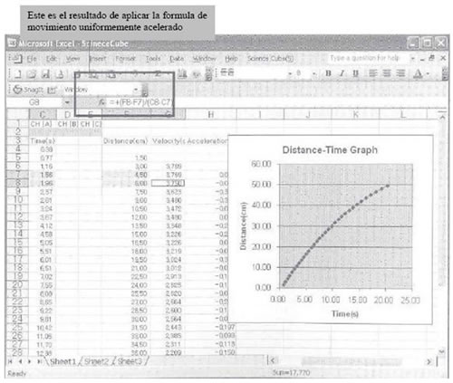

LDM
Manual de Operación de la Interfase
Para uso escolar Usted puede usar este producto en la enseñanza científica.
NOTA
1. Antes de usar la interfase (de ahora en adelante será referenciado como "este producto") asegúrese de leer este manual detenidamente y cuide la seguridad en la realización de los experimentos.
2. Este producto consiste en una interfase, sensores y un programa. Es recomendable que este producto sea utilizado bajo la supervisión de un profesor dentro de una escuela o instituto de educación científica con propósitos educativos.
3. Si usted desea usar este producto en casa, utilícelo bajo la supervisión de un adulto tenga conocimientos acerca del manejo y funcionamiento del producto.
4. Todos los resultados que obtenga de este producto pueden ser utilizados únicamente para propósitos educativos. Este equipo no es el apropiado para la realización de investigaciones profesionales o en aplicaciones comerciales.
5. Debe saber que no somos responsables por los resultados causados por abuso o uso inapropiado del equipo.
Esta Interfase esta compuesto por una interfase, sensores y software. Por lo tanto, si usted compra este producto como un paquete, asegúrese que cada uno de los componentes mencionados están incluidos. Los componentes de Interfase son los siguientes:
1. Interfase – 1(Lite o Pro)
2. CD de instalación y manual de instrucciones.
3. Sensores (punta de prueba: incluyendo un acondicionador de señales) – varia dependiendo de las condiciones del paquete.
4. Cable de entrada para el sensor – 3
5. Cable USB – 1
6. Otros componentes – varían dependiendo de las condiciones del paquete.
Puntos Fuertes |
|
Reconocimiento Automático |
La interfase tiene un microprocesador incorporado, por lo que puede intercambiar todo tipo de información con la computadora. |
Experimento con Excel |
Interfase está diseñada para comunicarse con Microsoft Excel. Por lo tanto, usted puede obtener y analizar los datos obtenidos de una manera fácil usando el mundialmente famoso programa, Excel. |
Experimentos en exteriores |
“Interfase Pro” no es una simple interfase, ya que también cuenta con una pantalla LCD y una batería interna de alta eficiencia, así que usted puede realizar experimentos al aire libre sin necesidad de conectar la interfase a una computadora. Una vez terminado el experimento, Interfase hacia los datos almacenados en la interfase hacia la computadora y lo ayudara a utilizar herramientas de análisis muy complicadas. |
EXCELente en aplicación y expansión |
La interface Interfase soporta señales analógicas y digitales tanto de entrada como de salida, por lo tanto, usted puede utilizar cualquier sensor de reconocimiento automático o algún sensor diseñado por usted mismo. Si usted utiliza la salidas digitales, también podrá usar este producto no solo para experimentos científicos sino que también podrá emplearlo como por ejemplo un controlador de robots |
Advertencia |
Puntos fuertes |
Advertencias de seguridad |
|
Antes de empezar |
Interfase |
Requerimientos mínimos en su sistema |
|
Antes de los experimentos |
Configurando experimentos con EXCEL |
Recolección de datos experimentales |
|
Cambiando el formato De los datos |
|
Haciendo gráficas de los Experimentos |
|
Aplicando formulas a los datos obtenidos |
|
Usando Visual Basic en Excel |
|
Experimentación practica con Excel. |
|
Experimentos |
Experimento de Producción de sonido |
Experimentación con “Sound Wave” |
|
Información de la interfase Interfase |
Información Útil |
Lista de sensores |
|
Información de las interfaces |
|
Gracias por adquirir este producto. Antes de usar el equipo asegúrese de leer este manual. |
|
Esta parte trata acerca de cómo conectar la interfase Science Cube, los sensores y la computadora.
Lea cuidadosamente las explicaciones e instrucciones acerca de los canales de entrada/salida de la interface y del bloque de terminales
Como usar la Interfase
La interfase consiste en varios canales de entrada/salida y un bloque de terminales como las figuras mostradas anteriormente, a continuación se da una explicación de cada parte mostrada en las figuras. Lea este manual detenidamente. Siga las instrucciones para trabajar con los canales de entrada/salida, el bloque de terminales, etc.
1.- Interfase
La interfase maneja y analiza las señales obtenidas por los sensores y envía la información a la computadora. La interface cuenta con un microprocesador integrado.
2.- Canales de Entrada
La interfase cuenta con tres canales de entrada, los cuales pueden recibir señales de sensores analógicos o digitales. Cuando conecte los sensores a los canales de entrada, no utilice el bloque de terminales y tampoco envié ni una señal eléctrica al bloque, (todos los cables deben estar apartador del bloque de terminales).
3.- Bloque de Terminales
El bloque de terminales es un canal especial de entrada, el cual le permite introducir sus propias señales analógicas o digitales. El bloque de terminales tiene tres canales de entrada y cada canal proporciona '+5V', 'GND'. No introduzca señales mayores a +5V. si usted desea introducir señales de mas de +5V, debe utilizar un bloque especial de terminales. Es recomendable que desconecte los sensores de los canales de entrada cuando este utilizando el bloque de terminales.
4.- Canales de Salida (PRO, LITE)
Los canales de salida pueden generar señales tanto analógicas como digitales usando un modo especial de control. Debe conectar el cable DIN de 8 terminales al modulo de control.
Los canales de salida pueden generan señales de control como PWM, voltajes de CD, ondas senoidales, ondas cuadradas, ondas triangulares y diente de sierra, señales rampa ascendente y descendente.
5.- Puerto USB (PRO, LITE)
La computadora y la unidad central de la interfase se comunican e intercambian información usando un puerto, básicamente los datos son intercambiados por medio del puerto USB.
6.- Puerto Serial(PRO, LITE)
Si la computadora no cuenta con un puerto USB disponible, la interfase PR_O puede conectarse al puerto serial (puerto serial versión de 9 pines). Este tipo de conexión es imposible de realizar con la interfase LITE. Si utiliza el puerto serial, puede realizar experimentos sin la necesidad de instalar el controlador USB de la interfase Science Cube.
7.- LED
Los LED's proporcionan información relacionada con la alimentación eléctrica o los errores de una forma directa y visual.
LITE |
Condiciones de los LED’s |
Detalles |
LED verde parpadeando |
Experimento en curso |
|
LED rojo encendido |
Fuente externa (USB o fuente de CD) conectada |
|
LED amarillo encendido |
Cargando la batería, una vez que se termina de cargar el LED se apaga |
MAY |
LED |
Detalles |
NO APLICA VISUALIZACIÓN EN PANTALLA DE ORDENADOR |
NO APLICA VISUALIZACIÓN EN PANTALLA DE ORDENADOR |
8.- Botones De Operación (LITE, PRO)
La interfase PRO tiene siete botones operativos los cuales le ayudan en la realización de experimentos en exteriores. Usted puede acceder a varios menús ´por medio de estos botones, además de que puede realizar los mismos experimentos que realizaría con la interfase conectada a una computadora.
9.- LCD
La interfase PRO] tiene gran pantalla LCD (128 x 64) que puede desplegar gráficos de alta calidad. Los menús son mostrados de forma grafica por lo que cualquier persona puede acceder a ellos de una forma sencilla. Una gran variedad de lenguajes pueden ser desplegados en la pantalla, incluso lenguajes con una simbología difícil (como el japonés, chino, etc.).
Carga de la batería (solo para la versión PRO)
|
La interfase PRO de Science Cube cuenta con una batería de litio (de alta eficiencia y estabilidad) incorporada. Por lo que una vez que este completamente cargada, puede usar la interfase al aire libre sin la necesidad de conectarla a una fuente de alimentación especial. 1. Carga mediante la computadora El puerto USB de la interfase PRO esta conectado internamente al circuito cargador de la batería. Por lo que si el equipo esta conectado a una computadora, la batería se recargara de forma automática. 2. Carga mediante AC220 Si utiliza el adaptador USB-220, podrá cargar la batería de una forma sencilla sin la necesidad de un conector especial. 3. Tiempos de carga
4. Desechar la batería La batería contiene litio por lo que una vez que haya pasado la vida útil de la misma, tirela siguiendo las reglas de su país o región. |
- Condiciones de la Computadora
Science Cube esta aprobado para trabajar en diferentes tipos de computadoras. Y fue especialmente diseñado, para realizar experimentos bajo PC's con Microsoft Windows y EXCEL. A continuación se listan los requerimientos mínimos para la computadora que va a trabajar con la interfase,
Requerimientos |
Especificaciones |
Características mínimas |
MS Windows 98 SE (las versiones de Windows anteriores no soportan dispositivos USB) EXCEL 2000 Procesador a 500MHz RAM 128 MB |
Características recomendadas |
MS Windows 2000/XP |
Puede realizar varios experimentos con Excel. Esta parte trata acerca de cómo generar sus propias condiciones de experimentación.
Microsoft Excel es una marca de Microsoft por lo que los derechos de autor del programa son propiedad de Microsoft Corporation
| - Configurando un experimento desde el menú de una hoja de calculo
1. Una vez que haya conectado la unida principal de Science Cube a la computadora. Abra un nuevo documento de Excel, note que hay un menú adicional llamado “Science Cube (S)” desde donde podrá configurar las opciones para los canales, las opciones de entrada, el temporizador digital o las opciones de salida. |
||||||||||||||
|
||||||||||||||
Si desea realizar estimaciones rápidas, el intervalo de tiempo está por debajo de los 0.005 segundos, debe usar un programa especial, ya que Excel no está programado para trabajar a esa velocidad. |
Configuración de un canal de entrada
1. Si algún sensor de reconocimiento automático está conectado a la computadora, dicho canal se encontrara seleccionado en la ventana de configuración. Cuando un sensor de reconocimiento automático está conectado, no conecte ni un otro elemento al bloque de terminales.
|
|||||||||||||
|
||||||||||||||
El temporizador estroboscopio estima el tiempo de repetición de una señal alta o baja. Puede ser utilizado para la estimación del periodo de un péndulo, la velocidad y aceleración de un rotor, etc. |
Temporizador digital
1. El temporizador digital es una opción con la que cuenta el equipo para hacer estimaciones temporales de forma estroboscopia. Esta opción puede estimar las señales a partir de los sensores de reconocimiento automático o desde el bloque de terminales.
|
|||||||||||||
|
||||||||||||||
| Opciones de salida
1. si conecta el modulo de salida a la unidad principal Science Cube, usted puede producir una gran variedad de señales de de salida, tanto analógicas como digitales. El equipo puede ser usado como controlador básico en algunos experimentos, como el control de lámparas, LED’s, motores, etc. Puede realizar operaciones de entrada y salida al mismo tiempo por lo que es posible usarlo para la realización de experimentos controlados. 2. El PWM es la señal base de salida y si conecta el modulo de control podrá configurarlo de la siguiente forma, |
||||||||||||||
|
||||||||||||||


| Recolección de datos experimentales | - Experimentación y recolección de datos. 1. Si da clic en la opción [Experiment] en el menú [Science Cube], una ventana aparecerá en su pantalla. Si elije la opción [Data Collection], los datos serán recogidos de forma automática a lo largo del experimento y almacenados en Excel. Si no desea guardar los datos y solo los quiere visualizar, entonces no elija esta opción. |
Experimento |
Rango de configuración |
PWM |
0-99 |
Voltaje CD |
0-5.0 V |
Onda senoidal |
0-1000 Hz |
| Cambiando los formatos de los datos | - Aumento del tamaño de los datos durante el experimento. 1. los valores estimados en tiempo real de los datos adquiridos a través de los canales A, B y C son almacenados en las celdas C2, D2 y E2. si selecciona las celdas anteriormente mencionadas y presiona el botón derecho del Mouse, usted podrá cambiar el formato de las celdas. |
- Haciendo gráficas con el asistente para gráficos.
1. Si desea hacer gráficas de forma automática durante algún experimento, solo tiene que establecer el rango de celdas que desea graficar con el asistente de gráficos (recuerde que los datos obtenidos en el experimento son almacenados a partir de las celdas C4, D4 y E4).
2. Realice una gráfica de dispersión como ejemplo. Seleccione la opción [grafico] del menú [insertar], o el icono [Asistente para gráficos] ubicado en las barras de herramientas y seleccione el tipo de grafico
3. Elija el tipo de gráfica y el rango de datos que serán representados en ella. Confirme o configure los rangos de valores de los ejes X e Y
4. Elija o introduzca el titulo de la gráfica, de los ejes y las escalas en la ventana correspondiente a dichas configuraciones.
6. Si selecciona la gráfica completa y presiona el botón derecho del Mouse, podrá reconfigurar la forma de la gráfica, opciones de los datos, etc.
- Configurando la escala de los ejes X e Y.
1) Si da doble clic sobre la escala de los ejes, podrá cambiar el formato de los mismos.
2) Introduzca el valor mínimo y el máximo que se reflejara en el eje Y
- Cambiando el rango de datos de los ejes X e Y.
1. Si desea graficar más datos que los que selecciono inicialmente, usted puede restablecer el rango de datos de la gráfica.
2. elija el tipo de grafico y el rango de datos que desea graficar. Posteriormente confirme su elección o reconfigure nuevamente el rango de valores para los ejes X e Y.
3. Seleccione e introduzca el titulo de la gráfica y los ejes en la ventana correspondiente a estas configuraciones
- Graficando más de dos rangos de datos
1. Usted puede graficar más de dos sistemas de datos en una sola gráfica. Por ejemplo, esto es usado para realizar comparaciones entre las lecturas obtenidas por dos diferentes sensores. Puede indicar la escala de tiempo en el eje X y los dos diferentes rangos de temperatura en el eje Y.
2. Elija la gráfica, presione el botón derecho del Mouse y elija la opción "datos de origen". Elija la opción "agregar" ubicada en la pestaña "serie" e introduzca un nombre. Elija los mismos valores para el eje X pero seleccione las diferentes series de valores que desea comparar para el eje Y. Si el nuevo rango de datos obtenido proviene del canal [B], el rango de celdas inicia en D4.
3. Science cube tiene tres canales de entrada, por lo que en un mismo experimento usted podrá realizar hasta tres gráficos comparativos diferentes. Si desea realizar una comparación de un mayor número de mediciones, copie el resultado de varios experimentos en un nuevo documento y realice la gráfica a partir de los datos obtenidos.
- Graficando dos rangos de datos como una sola gráfica X-Y.
1. Usted puede dibujar dos rangos diferentes de datos en una sola gráfica. Por ejemplo, si desea graficar el voltaje y la corriente eléctrica obtenidas en un experimento, puede poner el voltaje en el eje X y la corriente eléctrica en el eje Y.
2. Elija los datos de origen para los ejes X e Y
- Calculando el tiempo, distancia, velocidad y aceleración.
1. Usted puede guardar el movimiento de un objeto a través del tiempo con ayuda del temporizador digital.
2. Conecte el equipo para censar el tiempo/movimiento en la interfase Science cube o conecte una señal de estrobo al bloque de terminales directamente. Configure el temporizador e introduzca la cantidad de muestras que requiera. Por ejemplo, si conecta el equipo de grabación al canal [A], el resultado del experimento puede ser parecido a la gráfica mostrada en la figura,
3. El equipo para el censado de movimiento a través del tiempo es a base de una polea ranurada o de una tira seccionada, por lo que la distancia es regular. Debe configurar la formula que necesita en una celda ubicada después de la columna F, ya que los datos adquiridos en un experimento son guardados en las columnas C, D y F.
4. Para saber más acerca de la aplicación de formulas, lea el manual de Microsoft Excel.
- Aplicando Formulas de calibración
Las formulas de calibración pueden ser usadas cuando el usuario fabrica sus propios sensores, introduzca el voltaje registrado por el sensor al bloque de terminales y aplique la formula de calibración a los datos obtenidos.
(Nota: No introduzca voltajes mayores a 5V en el bloque de terminales)

- Estimando las condiciones de los valores de entrada
Usted puede estimar los valores de entrada en condiciones regulares e indicar el resultado en cualquier celda. Por ejemplo, puede desplegar la palabra "ON" cuando un voltaje de entrada es mayor a los 3V y la palabra "OFF" cuando el voltaje de entrada este por debajo de los 3V.
Usted puede desplegar varios mensajes de error, peligro. Instrucciones, etc. Dependiendo de las condiciones que se presenten en la entrada del sistema. Puede personalizar los mensajes que se desplegaran de acuerdo a cada experimento.
| Usando Visual Basic el Excel | - Usando VB en Excel. Usando Visual Basic en Excel Usando una macro y VB, puede realizar programas para ejecutar tareas específicas en el espacio de trabajo de Excel. Si necesita mas información acerca de macros y VB, lea el manual de Excel. - Configurando un cuadro de dialogo (ejemplo del manejo de VB en Excel) Este punto trata acerca de la forma de configurar un cuadro de mensaje en Excel. Si el valor esperado de entrada del canal [A], ubicado en la celda C2 cambia y llega a un valor que nos interese, puede ser desplegado un cuadro de dialogo haciendo alguna indicación. Por ejemplo, cuando es empujado el pistón de un inyector, si la presión del aire esta por encima de los 2026 hPa, la frase "La presión esta sobre los 2026 hPa" aparecerá en la pantalla. - Usando códigos de VB Hasta ahora, hemos aprendido acerca de la experimentación con ayuda de Excel. Si es bueno en el uso de Excel, podrá cambiar varios experimentos fácilmente. Además, si sabe generar códigos de VB en Excel podrá hacer los experimentos mas interesantes. En la imagen se muestra un ejemplo de código generado en VB. |
- Haciendo un programa de experimentación en VB
Si desea realizar un programa de experimentación en VB lea las regulaciones de Science Cube que están en el foro en línea del producto.
Esta parte trata acerca de cómo usar Excel en experimentos científicos. Si usted no tiene conocimientos acerca del manejo de Excel, le mostraremos la forma de realizar experimentos con solo unos clics.
Desde ahora, le mostraremos la forma más sencilla de realizar experimentos con la ayuda de Excel. So los estudiantes no están familiarizados con el uso de Excel, el profesor puede ayudarlos a realizar los experimentos.
1) Dibujando graficas de forma automática a lo largo de un experimento.
Usted puede realizar experimentos de forma inmediata con solo hacer clic en la opción [Experiment] ubicada en el menú [science cube] en Excel. Si configura una grafica antes de empezar un experimento, ésta se dibujara de forma automática mientras dure el experimento.
1. Primero, una vez que haya terminado los preparativos físicos para el experimento, elija la opción [Science Cube], de esta forma podrá observar como los datos obtenidos son almacenados en las correspondientes celdas del documento. Detenga el experimento y realice una grafica con la ayuda del asistente para gráficos.
2. Dibuje una grafica de dispersión utilizando el asistente de gráficos. Por ejemplo en un experimento de preparación de bebidas, puede ser respetado el tiempo desde el inicio del experimento hasta el final del mismo, mientras que el eje Y puede ser configurado para representar la temperatura del proceso a lo largo del experimento.
3. Establezca los rangos que serán mostrados en los ejes X e Y con la ayuda del menú "Datos de Origen".
4. Elija el color y la forma de la grafica con la ayuda del menú "Tipo de Grafico" que puede ejecutar seleccionando el area de la grafica con el clic derecho del mouse.
5. Configure el formato de los datos almacenados en las celdas del área de trabajo.
6. Una vez realizado esto, guarde el archivo de Excel.
2) Analizando la relación entre los ejes X e Y (calculando la línea de tendencia)
La fórmula que relaciona al eje Y con el X puede ser obtenida mediante el cálculo de la línea de tendencia. Por ejemplo, usted puede analizar el resultado del experimento calculando el cambio en la tendencia a través del tiempo (inclinación).
1. Configure un nuevo rango de datos para obtener su línea de tendencia.
2. Dibuje la línea de tendencia con la ayuda de la opción "agregar línea de tendencia"
3. Elija el tipo de tendencia que desea observar.
3) Experimentos con gráficas X-Y en tiempo real.
Hasta ahora, las explicaciones han sido tomando al eje Y como función del tiempo en el eje X. Sin embargo, si la variable, tiempo, no es importante, hay otra forma de generar gráficas. Si cambia el rango de cantidades.
a) Dibuje la gráfica de dispersión con la ayuda del asistente de gráficos. Configure el rango de datos para el eje X pero no utilice la serie de datos en la columna B de la hoja de cálculo, la cual representa el tiempo. Utilice la serie de datos de la columna C (CH A). Y ahora establezca los valores para el eje Y los datos obtenidos por el sensor B, ubicados en la columna D.
b) Configure los valores mínimo y máximo para los ejes X e Y.
c) Si realiza el experimento después de haber completado la configuración de la gráfica X-Y, los datos serán almacenados en las celdas de la hoja de cálculo de acuerdo al paso del tiempo, pero en la gráfica solo se verán reflejados los cambios registrados entre las cantidades configuradas en los ejes X e Y.
d) De esta forma, los datos son almacenados continuamente en las respectivas columnas a lo largo del tiempo de duración del experimento, por lo que solo podrá realizar gráficas X-Y con los datos capturados durante ese periodo de tiempo.
4) Aplicando fórmulas a los datos
Cuando es utilizado el Science Cube, los datos obtenidos en los experimentos son almacenados en las columnas C, D y E del área de trabajo en Excel. Pero si a los datos se les aplica una formula, podrá almacenarlos en otras celdas para de esta forma trabajar con ellos como datos de referencia para gráficas o futuros cálculos. Por ejemplo, una vez indicada las diferencias entre los datos de la columna C y D en la columna F, podrá generar una gráfica utilizando estos últimos resultados.
1. Dibuje una gráfica de dispersión con ayuda del asistente de gráficos y elija la columna de resultados como el rango de datos para uno de los ejes de la gráfica.
2. A los datos obtenidos por la interfase le podrá aplicar cualquier fórmula que necesite.
Science Cube soporta los programas "Sound Wave" y "Sound Pitcher". Estos programas están especialmente diseñados para realizar experimentos relacionados con el sonido. Utilizando estos programas, podrá realizar experimentos acerca de la amplitud, frecuencia, ondas, etc. Además de que tendrá la posibilidad de analizar las frecuencias sonoras de forma profesional mediante la aplicación de la transformada rápida de Fourier (FFT).
"Sound Wave" puede ser utilizado tan solo con la conexión de un micrófono directamente a la computadora.
Experimento de Producción de Sonido |
Sound Wave – (Producción de Sonido) Experimento de producción de sonido De entre las pestañas ubicadas en la parte superior de la ventana, seleccione la opción [signal generation]. Usted puede controlar la frecuencia, la forma de onda, y la amplitud de las señales, con lo que podrá realizar una gran cantidad de sonidos. Con este programa podrá controlar las salidas izquierda y derecha de sonido de forma individual. Por lo que podrá usar esta característica para hacer pruebas de interferencia de dos sonidos con frecuencia y amplitud diferente. |
|
|
Experimentación con “Sound Wave” |
Sound Wave – (Análisis del Sonido)
Ejecute el archivo “setup.exe” ubicado en la carpeta “Sound Wave” dentro del disco de Science Cube para instalar el programa. Después de haber realizado esto, encontrara un nuevo programa dentro de la carpeta [Science Cube], llamado [Sound Wave] instalado en el menú “inicio”. Con este programa podrá analizar la onda y la frecuencia de un sonido. Preparación del equipo y del programa. - Conecte un micrófono a la computadora. - Abra la ventana de control de volumen y elija la opción “propiedades” dentro del menú “opciones”. - Dentro del menú de propiedades elija la opción “grabación” y también seleccione las opciones “micrófono” y “mezcla de salida de onda” ubicadas abajo en la misma ventana - Presione el botón “aceptar” y podrá ver como la ventana cambia a una nueva con el nombre “control de grabación” con las opciones elegidas anteriormente. - Si realiza experimentos con la ayuda de un micrófono, este deberá estar activado. - Si el experimento se realizara sobre una pista de música, el mezclador deberá estar activado (el mezclador puede tener nombres diferentes, dependiendo de cada computadora). Experimento - Si realiza un experimento en [Sound Wave], podrá observar las ondas generadas por un diapasón o algún otro instrumento. - Si cambia a la pestaña [Sound Spectrum], podrá analizar las pestañas con la ayuda de la transformada rápida de Fourier (FFT). Para encontrar la frecuencia de Fourier, debe mover hacia abajo el curso de la línea llamada [FFT threshold]. De acuerdo con las condiciones del umbral, los resultados almacenados en una tabla de datos. - Puede guardar los resultados del sonido analizado como una hoja de cálculo en Excel o como un archivo de audio con extensión WAV. |
“Sound Wave” |
Sound Wave- (Las ondas sonoras)
Sound Wave analiza señales a una frecuencia de muestreo de 44kHz, y muestra la señal obtenida en la pantalla a intervalos de 0.08 segundos. |
|
|
“Sound Wave” |
Sound Wave – ( espectro sonoro)
Espectro sonoro |
|
|
Hasta ahora, hemos aprendido el uso del equipo en la experimentación. A continuación, le daremos más información relacionada al Science Cube.
"Sound Wave" puede ser utilizado tan solo con la conexión de un micrófono directamente a la computadora.
¿Cómo puedo usar el bloque de terminales?
El bloque de terminales de la interfaz Science Cube consiste en una terminal de salida de +5V, una Terminal GND y una Terminal de entrada para cada uno de los cuales. No debe exceder los +5V en las terminales de entrada (canales A, B, C) del bloque de terminales.
NOTA: Si los sensores de reconocimiento automáticos están conectados a la interfase, no es posible utilizar el bloque de terminales. Nunca introduzca una señal eléctrica en las terminales del bloque. Si desea usar el bloque de terminales, desconecte todos los sensores de la interfase.
¿Qué pasa si cierro el programa antes de que un experimento en curso sea terminado?
Si cierra el programa durante un experimento, la interfase no responderá cuando reinicie el programa. Para solucionar este problema, desconecte la interfase y conéctela nuevamente.
En Excel aparece un mensaje de instalación o de error.
Algunas ocasiones los mensajes de error o de procesos de configuración aparecen. Esto es debido al a versión se Windows y/o Excel. En estos casos siga las siguientes instrucciones:
1.- Para Windows 98
Si utiliza Windows 98 descargue todas las actualizaciones posibles desde la pagina de Internet de Microsoft.
2. Para Excel 97 (versiones anteriores a Excel 2000)
Si es usuario de Excel 97, debe actualizarlo a una versión 2000 o posterior.
3. Para otros casos (no incluidos en los números 1y 2)
Pueden presentarse problemas con la capacidad de intercambio de algunos archivos de Microsoft Excel. En este caso debe ejecutar el programa MSCOM setup.exe ubicado en la carpeta "Excel/mscomm32" del CD, y reinstale Excel usando el archivo setup.exe en la carpeta "EXCEL".
Aparece u un mensaje indicando que la interfase no esta conectada (problema en la instalación del controlador (USB).
Después de haber instalado Excel y conectado a la interfase, algunas veces aparece un mensaje indicando que la interfase no esta conectada. Asegúrese que esta instalado el controlador USB. Si conecta la interfase Science Cube, será reconocida e instalada automáticamente. Si este proceso no se lleva acabo de una forma correcta, debe instalar el controlador USB manualmente. Puede realizar esta tarea ejecutando el icono "sistema" ubicado en el papel de control. Si desea conocer más detalles, consulte los servicios vía Internet.
Después de la configuración manual, aparece una ventana de peligro en la seguridad cuando es ejecutado Excel.
Después de la instalación manual de las funciones adicionales en Excel, se abre una ventana de alerta de seguridad de acuerdo con las políticas de seguridad de Microsoft. Si reconfigura la seguridad para las nuevas firmas digitales, la ventana no aparecerá nuevamente. Lea el manual y configure la certificación digital en "Mi PC" dentro del panel de control. (La certificación digital esta incluida en el la carpeta [Excel] dentro del CD).
Quiero borrar el menú adicional con las funciones adicionales Science Experiment en Excel.
Si desea eliminar el menú, elija la opción "personalizar" dentro de la opción "barras de herramientas" del menú "VER". Una vez que haya aparecido la ventana de personalización de los menús, presione el botón derecho del Mouse sobre el menú que desea borrar y posteriormente elimínelo.
Deseo realizar mi propio programa en Excel. ¿Cómo puedo realizar varios programas de acuerdo al plan de estudios?
Puede realizar programas en Excel usando Science Cube de acuerdo a su plan de estudios. Si desea generar algún programa, utilice VB. Puede encontrar información acerca de la realización de programas en Excel dentro del foro de Science Cube en línea.
Necesito más sensores. ¿puedo usar varios tipos de sensores?
Science Cube puede ser usado por sensores comprados por separado además de los sensores de reconocimiento automático suministrados. También puede usar sensores hechos por usted mismo conectándolos al boque de terminales. Si desea realizar sensores hechos por usted, necesitara calibrarlos. Podrá encontrar información acerca de la calibración de los sensores en el foro Science Cube en línea.
Lista de Sensores
Código del sensor |
Nombre |
Unidad |
Rango de Operación |
Resolución |
Características |
|
Mínimo |
Máximo |
|||||
KDS-1009 |
Sensor de voltaje |
V |
-10 |
+10 |
0.007 |
Cuenta con un interruptor de sobretensión de |
KDS-1010 |
Sensor de corriente |
A |
-1 |
+1 |
0.001 |
Cuenta con un interruptor incorporado que resiste un exceso de corriente de |
KDS-1035 |
Galvanómetro |
mA |
-12.5 |
+12.5 |
0.006 |
Puede elegirlo de entre tres posibles rangos, de acuerdo a sus necesidades. |
-1.25 |
+1.25 |
0.001 |
||||
-0.125 |
+0.125 |
0.001> |
||||
KDS-1001 |
Sensor de temperatura de acero inoxidable |
°C |
-25 |
+125 |
0.1 |
Sensor barato y popular. |
KDS-1031 |
Sensor de temperatura de acero inoxidable PT |
°C |
-50 |
+180 |
0.06 |
El uso de platino le proporciona al sensor una mayor exactitud. |
KDS-1002 |
Termopar |
°C |
-200 |
+1200 |
0.6 |
Cuenta con un amplio rango de operación. Además cuenta con la posibilidad de sensar temperaturas muy altas o muy bajas, que se encuentran alejadas de la temperatura normal. |
KDS-1034 |
A – Sensor de presión diferencial |
hPa |
-1000 |
+3000 |
1.2 |
Sensor de presión relativa. Calculando la diferencia con la presión de aire presente. |
KDS-1032 |
B – Sensor de presión difrencial |
hPa |
-650 |
+650 |
0.34 |
Sensor de presión relativa. Calculando la diferencia con la presión de aire presente. Tiene un menor rango de operación, pero es más exacto. |
[NOTA] Si el rango de operación de encuentra vacio, significa que los sensores no están incluidos en el paquete básico Science Cube. Debe comprarlos por separado. Si necesita más información, puede contactarnos vía Internet.
Lista de Sensores
Código del sensor |
Nombre |
Unidad |
Rango de operación |
Resolución |
Características especiales |
|
Mínimo |
Máximo |
|||||
KDS-1033 |
Sensor de luz fotométrica |
Lux |
0 |
15000 |
1.6 |
Su velocidad de reacción a los cambios luminosos es rápida. |
KDS-1007 |
Sensor de campo magnético |
Gauss |
-50 |
+50 |
0.025 |
Estima la velocidad de las líneas de campo magnetico, cuyos ángulos de incidencia son verticales a la parte frontal del sensor |
KDS-1025 |
Sensor de movimiento |
m |
0.4 |
6.0 |
0.001 |
Estima la distancias a un objeto usando ondas supersónicas. Puede realizar hasta 20 lecturas por segundo. |
KDS-1005 |
Sensor de PH |
|
0 |
14 |
0.0035 |
|
KDS-1020 |
Sensor CO2 |
ppm |
0 |
5000 |
|
|
KDS-1021 |
Sensor de O2 |
ppm |
|
|
|
|
KDS-1022 |
Sensor de oxigeno disuelto |
ppm |
|
|
|
|
KDS-1006 |
Sensor de Fuerza |
N |
-50 |
+50 |
|
|
[NOTA] Si el rango de operación se encuentra vacio, significa que los sensores no están incluidos en el paquete básico Science Cube. Debe comprarlos por separado. Si necesita más información, puede contactarnos vía Internet.
Información Interfase Lite (Lite-II)
Contenido |
Detalles |
|
Alimentación |
USB: fuente de alimentación USB de 5V |
|
Terminales de entrada |
Puerto USB |
USB |
Entrada |
Canal de entrada |
3 canales (entradas analógicas) |
Formato de entrada |
Sensores automáticamente reconocibles bloque de terminales temporizador digital. |
|
Rango de Muestreo |
Basado en Excel: 200 muestras/seg. (1 canal) 20muestras/seg. (3 canales) (00.005s £ 00.49s 1 canal de recolección de datos) (00.050s £ 60.000s 3 canales de recolección de datos) |
|
Cable de entrada |
Cable estándar 1394 |
|
Salida |
Canales de salida |
3 canales análogos de salida |
Formatos de salida |
PWM |
|
Cable de salida |
Cable DIN (6 pines) |
|
Sensor automáticamente reconocido |
Acondicionador de señal tipo punta de prueba |
|
Condiciones de operación |
Temperatura: 0°C – 40 °C |
|
[NOTA] Los estándares mostrados en la información de la interfase pueden cambiar sin previo aviso. *aplicable solo en la interfase Lite-II
Información Interfase PRO
Contenido |
|
Detalles |
Alimentación |
|
Batería incorporada:3.6V, 1200mA (celda de litio) |
Terminales de Entrada |
Puerto serial |
RS-232C |
Puerto USB |
USB 1.1 |
|
Entrada |
Canal de entrada |
3 canales análogos de entrada (ADC de 12 bits) |
Formato de entrada |
Entrada analógica de 0 - 5V |
|
Rango de muestreo |
Basada en Excel: cada dato es recolectado en 0.05 – 60 seg. |
|
Cable de entrada |
Cable sensor de 6 pines |
|
Salida |
Canal de salida |
1 canal digital de salida (Mini Din de 6 pines) |
Cable de salida |
Cable Mni Din (6 pines) |
|
Sensor automáticamente reconocido |
Acondicionador de señal tipo punta de prueba |
|
Recolección de datos |
50,000 unidades |
|
Almacenamiento de experimentos |
Máximo: 16 experimentos |
|
pantalla |
Pantalla de cristas liquido 128 * 64 |
|
Actualización |
Actualizable vía USB |
|
Condiciones de operación |
Temperatura: 10°C – 35°C |
|
Peso |
252 g aproximadamente (incluyendo la batería) |
|
Color |
Plateado |
|
Medidas |
160 * 93 * 22 (ancho * longitud * altura)) |
|
[NOTA] Los estándares mostrados en la información de la interfase pueden cambiar sin previo aviso.